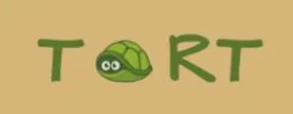
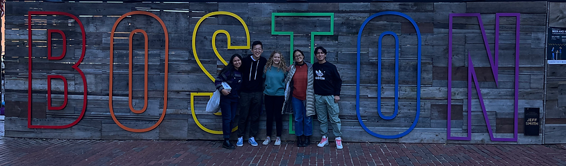
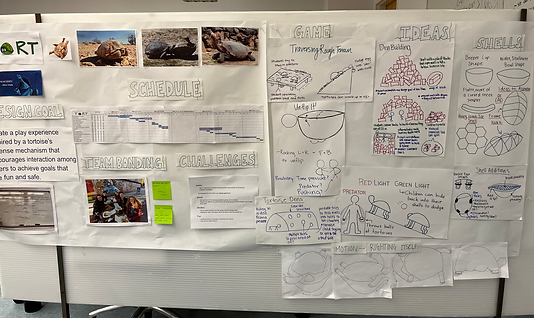
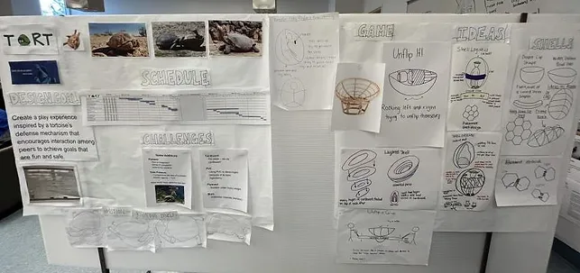
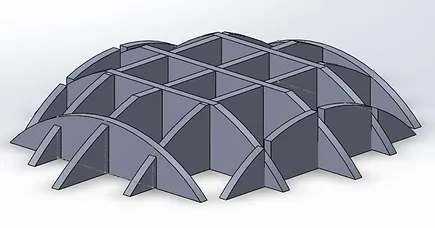
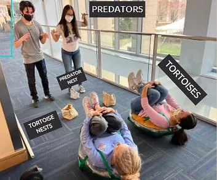
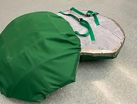
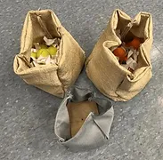

TORTOISE PLAY EXPERIENCE
COURSE: DESIGN NATURE, FALL 2021

For the second portion of my Design Nature course, I worked in team of
five to ideate, design, and fabricate a bio-inspired play experience for
fourth grade students. I predominantly worked on design fabrication and
CAD in SolidWorks. It was a six-week project, culminating in our work
being tested by the Olin community and then being sent off to the local
elementary school.

GROUPMATES: Rizza Anderson, Richard Li, Karina Lamoreux, Daniel Quinteros
To begin the design process, we extensively researched every single interesting
tortoise behavior that we could find, ranging from traversing rocky terrain,
to burrowing, to fighting. The ideation phase of our design cycle was fruitful,
as we brainstormed tens of shell designs and game designs.
We took our ideas to our concept and detailed design reviews to receive feedback
from instructors and design experts within our community.
CONCEPT DESIGN REVIEW (right) & DETAILED DESIGN REVIEW (left)


FABRICATION & MODIFICATION
To begin our fabrication process, Daniel and I used SolidWorks to create a model for our
first tortoise shell. Since we settled on an unflipping game,
our shell would have to be life-size. Designing a reusable, sturdy,
and bio-inspired fourth-grader-sized shell was our biggest challenge.
Daniel and I created four CAD prototypes before settling on our final.
To build our many prototypes, I spent hours in the laser-cutting room with
Karina and Rizza cutting out each of our cardboard shells.

Our final CAD in SolidWorks!
At the end of our six-week adventure, we had created a fun, safe, and engaging play
experience to sent to our local elementary school.
We incorporated the well-known tortoise behavior of unflipping,
enabling fourth graders to become tortoises themselves.
During this experience, I fell in love with the design process and engineering
engaging experiences for others. I'd like to continue working with user design
in the future.



Left: The final setup
Middle: The two final shells that Karina & I laser-cut and the entire team duct-taped together, covered in cloth, and attached straps to.
Right: The "nests" that I sewed together.
GAME DIRECTIONS